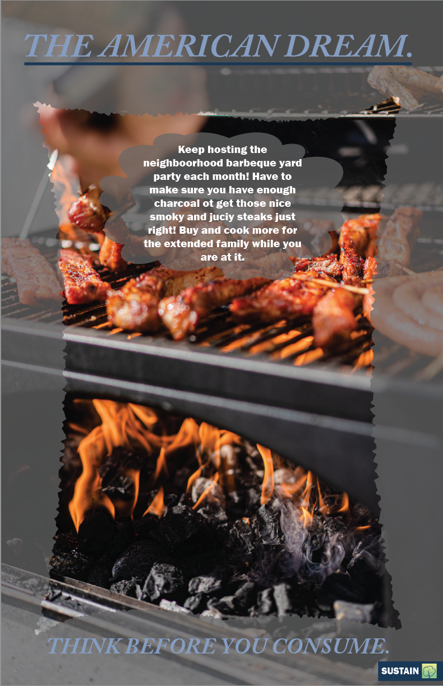
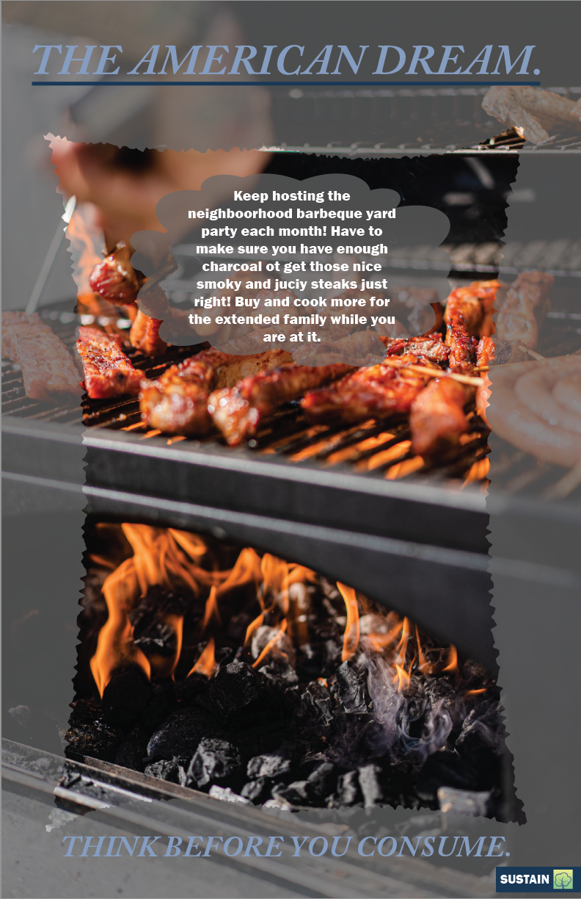

Through the SUSTAIN campaign, we aim to shed light and show people that modern lifestyle are dangerous to the environment. The following images are examples from our campaign that takes aim at the idea of the “American Dream”. The goal of this campaign was to shed light on the excess and luxury that idea holds and show how pursuing that “dream” is detremential to the environment. Overall, the aim is to raise awareness about being sustainable and to show that it is easy and acessible for everyday people to live in that way.
 
